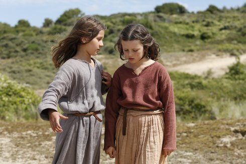

Jeannette, l’enfance de Jeanne d’Arc
Jeannette: The Childhood of Joan of Arc

Bruno Dumont
|
115 min – HD – Französisch B: Bruno Dumont – K: Guillaume Deffontaines – S: Bruno Dumont, Basile Belkhiri – M: Igorrr – P: 3B Productions, Arte France – V: Luxbox – Mit Lise Leplat Prudhomme, Jeanne Voisin, Lucile Gauthier, Aline Charles
|
sunday 14 oct 11 am theatiner
1425. The Hundred Years’ War between France and England rages on. The future Joan of Arc is barely ten years old and lives in Domrémy, in Lorraine. One day, as she tends to her sheep, she confesses to her friend Hauviette that she can no longer bear the ravages of the English. Sister Gervaise, a nun, attempts to reason with her, but the young maid is ready to take up arms for the salvation of souls. Based on texts written by Charles Péguy, the story of the early life of Joan of Arc is the cue for the director to blend wit and mysticism in a metal musical that charts the radicalization of a “croyance”. (72. Locarno Festival)
Bruno Dumont Born in Bailleul in the French part of Flanders in 1958, Bruno Dumont is one of the most original directors on the international scene today. Many of his films have proved controversial during a career stretching back over two decades, in which he has focused his rigorous, austere and uncompromising gaze on the mystery that lies within the reality of daily life, meticulously exploring the question of the existence of evil and the banal forms it can take. In 2018 he was honored with Pardo d’onore, Locarno.
|
| Films Twentynine Palms 2003 – Flandres 2009 – Hadewijch 2009 – Camille Claudel 1915 – P'tit Quinquin 2014 – Ma Loute 2016 – Jeannette 2017
|